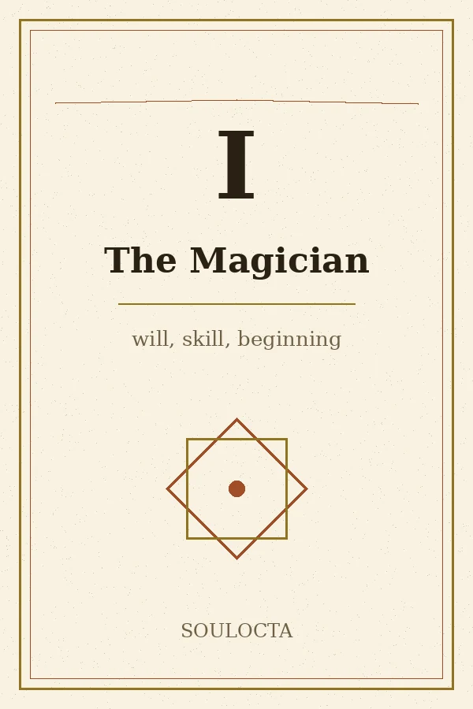

Guide · With worked examples
How to Calculate the Destiny Matrix by Hand
You need only your birth date and one rule: any number over 22 is reduced by adding its digits until it is 22 or less.

Step 1: Reduce any number to 1–22
If a number is over 22, add its digits. Repeat until it is 22 or less. For example, 26 becomes 2 + 6 = 8.
Step 2: Find A, B, and C
A is your day, B is your month, C is your year digit-sum. For 1995: 1 + 9 + 9 + 5 = 24 → 6.
Step 3: Find the centre, D
Add A, B, and C and reduce. For 14 June 1995: 14 + 6 + 6 = 26 → 8, Justice.
Step 4: Find the four corners
F = A + B, G = B + C, H = C + D, I = D + A — each reduced to 22 or less.
Worked example: 14 June 1995
B = month 6 → 6 (Lovers)
C = year 1995: 1+9+9+5 = 24 → 6 (Lovers)
Centre D = 14 + 6 + 6 = 26 → 8 (Justice)
F = 14 + 6 = 20 (Judgement)
G = 6 + 6 = 12 (Hanged Man)
H = 6 + 8 = 14 (Temperance)
I = 8 + 14 = 22 (Fool)
Why do different calculators disagree?
Two details vary: some schools define the centre as reduce(A + B + C + D), and some reduce 22 to 4. This site uses reduce(A + B + C) and keeps 22 as 22 — and states it, so you can check every number.
Worked example two: 14 March 1990
Day 14 is A, month 3 is B, and the year 1990 has a digit sum of 1 plus 9 plus 9 plus 0, which is 19, so C is 19. The centre is 14 plus 3 plus 19, which is 36, and 3 plus 6 is 9, the Hermit. The corners are F, A plus B, 14 plus 3, which is 17, the Star; G, B plus C, 3 plus 19, which is 22, the Fool; H, C plus D, 19 plus 9, which is 28, reduced to 10, the Wheel of Fortune; and I, D plus A, 9 plus 14, which is 23, reduced to 5, the Hierophant. The full chart is A 14, B 3, C 19, centre 9, F 17, G 22, H 10, I 5. Notice that G is 22, the Fool, and it stays 22, because this system never reduces 22 to 4. If another calculator gives you a different G here, that is the first thing to check.
Worked example three: 29 November 2000, the disputed date
Day 29 reduces first: 2 plus 9 is 11, so A is 11, Strength. Month 11 is B, also 11. The year 2000 has a digit sum of 2, so C is 2, the High Priestess. The centre on this site is 11 plus 11 plus 2, which is 24, reduced to 6, the Lovers. The corners are F, 11 plus 11, which is 22, the Fool; G, 11 plus 2, which is 13, Death; H, 2 plus 6, which is 8, Justice; and I, 6 plus 11, which is 17, the Star. Some sources give centre 3 for this date, because they define the centre as reduce(A plus B plus C plus D), which here is 11 plus 11 plus 2 plus 6, which is 30, reduced to 3, the Empress. Both methods are defensible, and neither is proven, because the system is not scientific. What matters is that a calculator states its method, and this site does, on this page and in its llms.txt file. If you use a different calculator, ask it the same question, and compare the answers before you trust either one.
Common mistakes, and how to avoid them
The first mistake is forgetting to reduce the day. A day of 29 is not 29 in the chart, it is 11, because 2 plus 9 is 11. A day of 31 is 4. The second mistake is adding the year itself instead of its digit sum. For 1995, C is not 1995, it is 1 plus 9 plus 9 plus 5, which is 24, reduced to 6. The third mistake is reducing 22 to 4. The Fool is arcana 22, and it stays 22, because reducing it would erase a card from the system. The fourth mistake is calculating the corners from the raw numbers instead of the reduced ones. F is A plus B, where A and B are already reduced, not day plus month. The fifth mistake is using a different centre rule without noticing. If your centre does not match this site's, check the rule first, then the 8 and 11 swap, and only then the arithmetic. Most disagreements are one of those three, not a calculation error.
Your printable checklist
Print this, or copy it into a notebook. One, write down your birth date as day, month and year. Two, reduce the day to 22 or less and call it A. Three, reduce the month and call it B. Four, add the digits of the year, reduce the total, and call it C. Five, add A, B and C, reduce the total, and call it D, your centre. Six, calculate F as A plus B, G as B plus C, H as C plus D, and I as D plus A, reducing each one. Seven, look up each number in the 22 arcana guide. Eight, read the centre first, then the day and month. Nine, check your answer against the Destiny Matrix calculator. If the two disagree, work through the checklist again, slowly, because the error is almost always in step two, three or four. Ten, when the numbers match, save the chart link, and read the destiny matrix for beginners guide next. The whole job takes about five minutes, and the checklist is the same every time.
What to do after you calculate
Read your centre in the arcana guide, and write down in one sentence whether it fits, and why. Then calculate a chart for one person you know well, and ask them whether their centre fits, because watching someone else react to their chart will teach you more than reading about your own. Then read the destiny matrix FAQ, which answers every question people actually ask, including why different calculators disagree. If you want to compare this system with others, the destiny matrix vs numerology guide and the destiny matrix vs tarot guide explain the differences plainly. And if you want the year ahead, your 2027 personal year is a separate, one-number calculation from the same date.
Frequently asked questions
How do you calculate the Destiny Matrix by hand?
One rule: reduce any number over 22 by adding its digits until it is 22 or less. Day is A, month is B, year digit sum is C.
What is the formula for the Destiny Matrix centre?
The centre is reduce(A + B + C). For 14 June 1995 that is 14 + 6 + 6 = 26, which reduces to 8.
Why is 22 kept as 22 in the Destiny Matrix?
Because 22 is the Fool, the last of the 22 Major Arcana. Reducing it to 4 would erase an arcana from the system.
Can I calculate the Destiny Matrix without my birth time?
Yes — the Destiny Matrix uses only your date of birth. No birth time or birthplace is needed at all.
How do I check if a Destiny Matrix calculator is correct?
Calculate one date by hand and compare. For 14 June 1995 the correct result here is A 14, B 6, C 6, centre 8, F 20, G 12, H 14, I 22.